Установщик
РекомендуемСтавится без прав администратора, создаёт ярлык в меню «Пуск» и потом обновляется сам. Если на компьютере нет .NET Framework или Visual C++, предложит скачать их с сайта Microsoft.
SHA-256
Неофициальное приложение для univer.kaznu.kz
Расписание по дням с темами из силлабуса, баллы с порогами 50, 70 и 90, все файлы раздела УМКД одной кнопкой. Вы входите на univer.kaznu.kz как обычно, своего сервера у Simple Univer нет.
Windows 7, 8, 8.1, 10 и 11 · Android 7.0 и новее · Chrome, Edge и Firefox
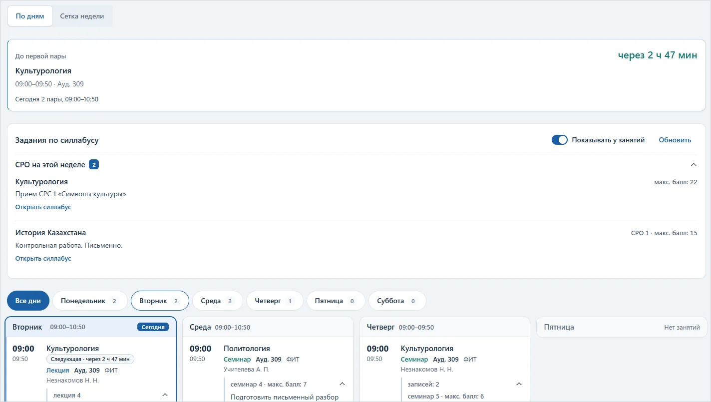
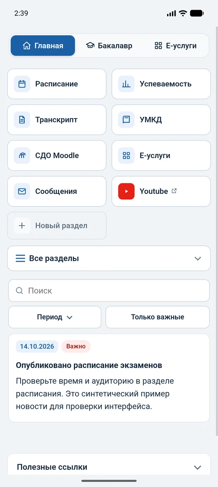
Все версии одинаково переделывают страницы сайта. Приложения для Windows и Android запоминают вход и обновляются сами, расширение работает в вашем браузере.
Разрядность видна в «Параметры › Система › О системе», строка «Тип системы» (в Windows 7: «Панель управления › Система»). Если не уверены, берите 64-разрядную.
Legacy нужен только для Windows 7 SP1, 8 и 8.1. Он работает на Chromium 109, для которого больше не выходят исправления безопасности. На Windows 10 и 11 ставьте Modern.
32-разрядной бывает только Windows 10: у Windows 11 такой версии нет.
Ставится без прав администратора, создаёт ярлык в меню «Пуск» и потом обновляется сам. Если на компьютере нет .NET Framework или Visual C++, предложит скачать их с сайта Microsoft.
Ничего не устанавливает. Распакуйте архив целиком в отдельную папку и запустите Univer.Desktop.exe. Новые версии придётся скачивать вручную.
Файлы пока не подписаны сертификатом издателя, поэтому SmartScreen их не знает. Сверьте SHA-256 скачанного файла с суммой на этой странице, затем нажмите «Подробнее» и «Выполнить в любом случае». Если сумма не совпала, файл не запускайте.
Откройте PowerShell в папке с файлом и выполните команду. Значение Hash должно совпасть с суммой на этой странице.
Get-FileHash .\Univer-Desktop-0.15.0-modern-x64-setup.exe
Сумма показывает, что файл скачался целиком и не изменился по дороге. Подписью издателя она не является.
Новые версии приложение находит само и ставит в пару нажатий.
0aa54a2d4714db17bc71b9a0a4d4bc7818cb57d91f10685200416bd2094732b9
APK подписан ключом SOX Team. Android не поставит поверх него версию с другой подписью.
Расширение оформляет univer.kaznu.kz прямо в браузере компьютера: тот же удобный вид, расписание с темами силлабуса, сводка успеваемости для печати и «Скачать все» в УМКД. Логин и пароль хранит менеджер паролей браузера, а пароль от Univer расширение не читает и не хранит.
Так установленное расширение само не обновляется. Firefox ставит только подписанные расширения, поэтому для него ждите версию в Firefox Add-ons.
По умолчанию расширение само подтверждает уведомление о прочтении и соглашение сайта: ставит отметку и один раз отправляет форму. Это выключается в настройках расширения, пункт «Подтверждать уведомление и соглашение».
В расширении нет сохранённого входа, PIN-кода, своего списка загрузок и просмотра файлов: этим занимается браузер.
Сняты на демонстрационных данных, личных данных в кадре нет.
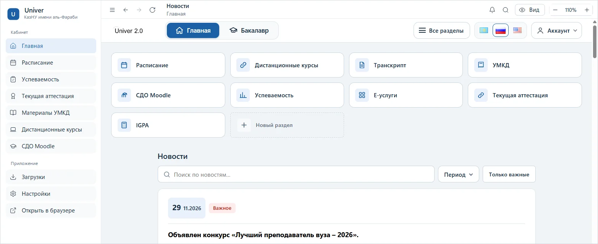
Главная кабинета с плитками разделов и новостями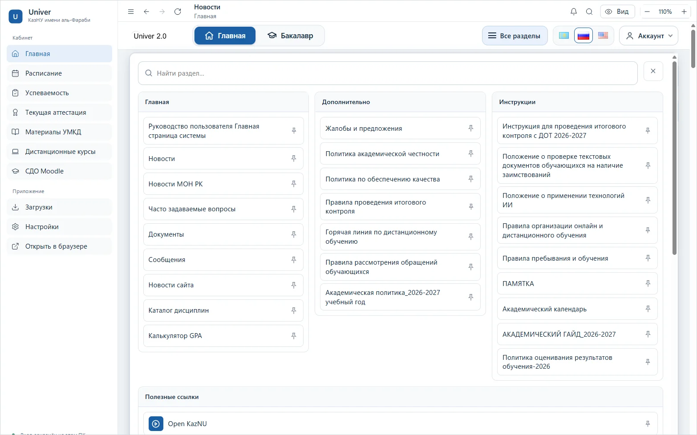
Панель «Все разделы»: поиск, группы и закрепление на главной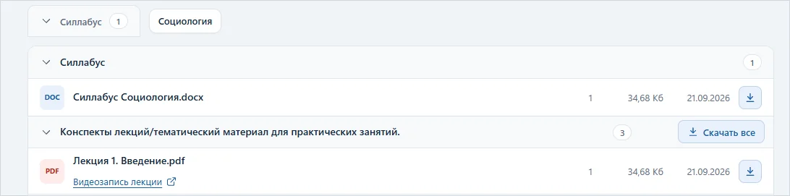
Материалы УМКД: кнопка «Скачать все» у раздела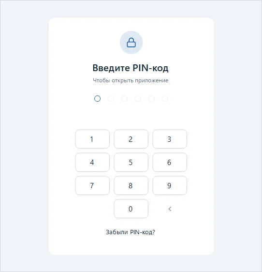
PIN-код при запуске приложения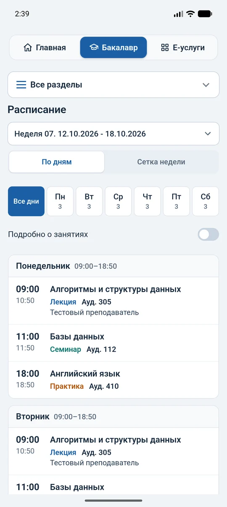
Расписание по дням с типом занятия и аудиторией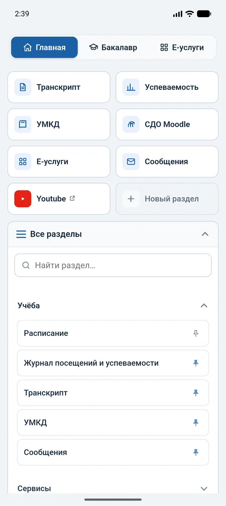
«Все разделы»: поиск и закрепление на главной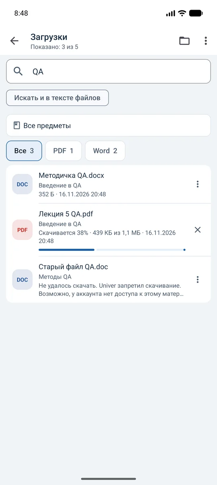
«Загрузки»: поиск, фильтр по предметам и типам файлов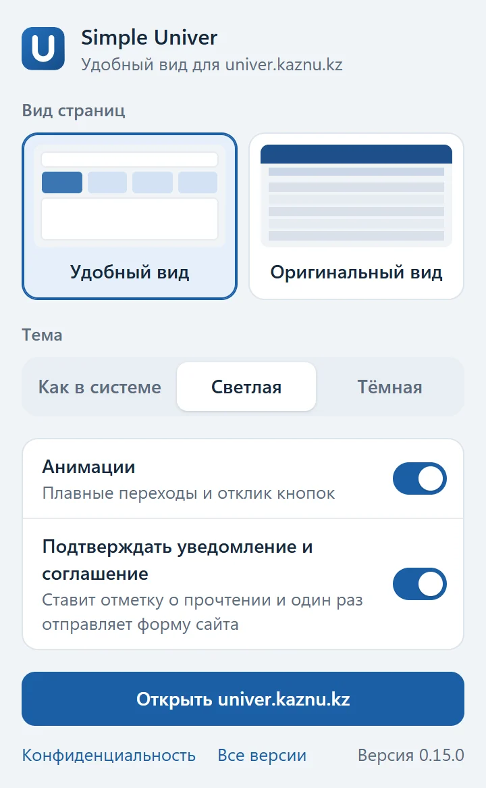
Настройки расширения: вид страниц, тема и подтверждение форм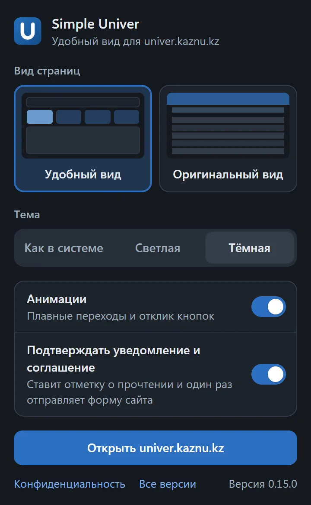
Те же настройки в тёмной темеСтраницы сайта расширение оформляет так же, как приложение для Windows на снимках выше.
| Возможность | Windows | Android | Браузер |
|---|---|---|---|
| Удобный вид сайта и «Оригинальный вид» | Есть | Есть | Есть |
| Расписание с темами из силлабуса | Есть | Есть | Есть |
| Сводка успеваемости | PDF и PNG | PDF и PNG | Печать и PDF |
| «Скачать все» в разделе УМКД | Есть | Есть | Есть |
| Снова входит сам, когда сессия закончилась | Есть | Есть | Нет |
| Где хранится пароль | Зашифрован в Windows | Зашифрован в Android | Менеджер паролей браузера |
| PIN-код | Есть | Есть, и отпечаток | Нет |
| Просмотр PDF, Word и Excel внутри | Есть | Есть | PDF в браузере |
| Уведомления сайта в колокольчике | Есть | Есть | Нет |
| Обновления | Сами | Сами | Через магазин |
Приложения и расширение обращаются к univer.kaznu.kz (Android ещё к СДО Moodle), а за обновлениями к GitHub. Аналитики и рекламы нет.
В Windows он зашифрован средствами Windows под вашей учётной записью, на Android ключом Android Keystore и не попадает в резервные копии. Расширение пароль не хранит.
Исходники приложений, расширения и этого сайта открыты на GitHub под лицензией GPL-3.0: можно посмотреть, что именно делает программа.
Политика конфиденциальности расширения Конфиденциальность: Windows Конфиденциальность: Android
Нет. Simple Univer делают независимо от университета. Приложение открывает тот же univer.kaznu.kz под вашей учётной записью и меняет только то, как страницы выглядят у вас.
Для Windows 10 и 11 нужен Modern, для Windows 7, 8 и 8.1 нужен Legacy. Если сомневаетесь, на Windows 10 и 11 берите Modern 64-разрядную. Windows на процессорах ARM не поддерживается.
Только на вашем устройстве. Приложение для Windows шифрует его средствами Windows под вашей учётной записью, приложение для Android ключом Android Keystore. Пароль можно не сохранять и входить вручную на странице сайта. Расширение пароль не хранит: его запоминает менеджер паролей браузера, если вы разрешите.
Установленное приложение для Windows и приложение для Android сами проверяют GitHub и предлагают новую версию. Portable-версия о ней сообщает, но новый архив нужно скачать вручную. Расширение из магазина обновляет браузер.
Оформляет страницы, читает недели расписания и силлабусы, чтобы показать темы занятий, и по умолчанию один раз подтверждает уведомление о прочтении и соглашение сайта. Подтверждение выключается в настройках расширения. Анкеты, тесты и другие формы оно не трогает.
Для iPhone и iPad нет. На Mac, Linux и Chromebook работает расширение для Chrome, Edge или Firefox.
Часть удобного вида может перестать работать до обновления приложения. «Оригинальный вид» в любой момент показывает сайт без изменений.